Meaning of all 78 tarot cards
Complete guide to the 78 tarot cards: Major and Minor Arcana, upright and reversed, for love, career and money.
Major Arcana
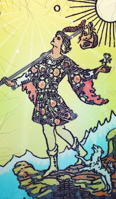
The Fool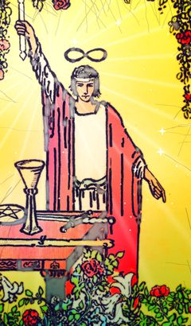
The Magician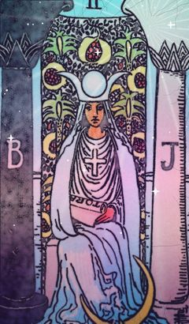
The High Priestess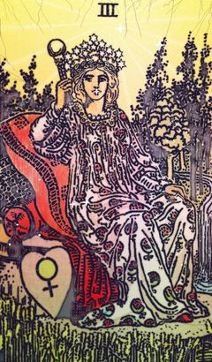
The Empress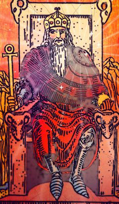
The Emperor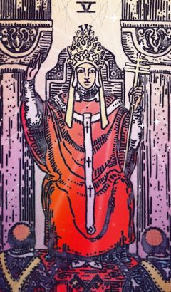
The Hierophant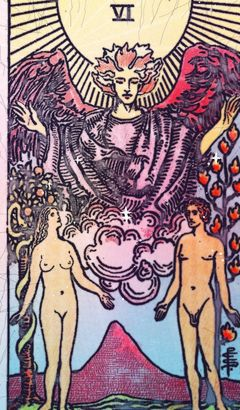
The Lovers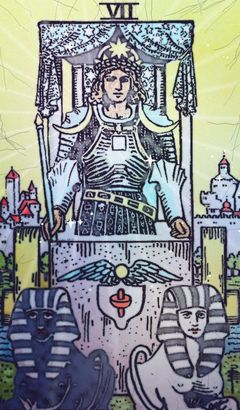
The Chariot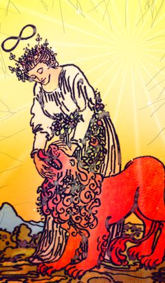
Strength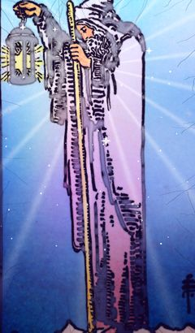
The Hermit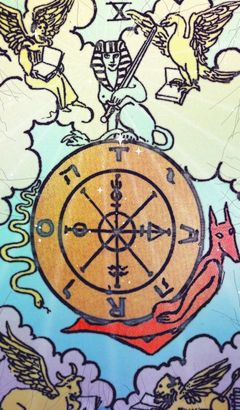
Wheel of Fortune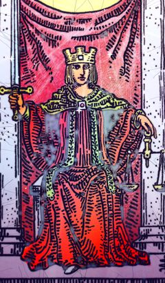
Justice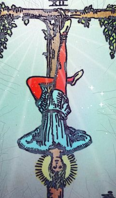
The Hanged Man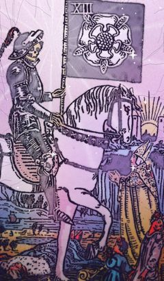
Death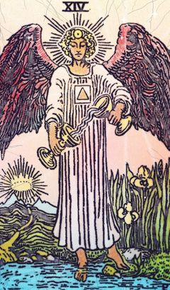
Temperance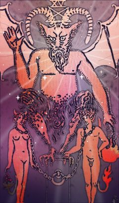
The Devil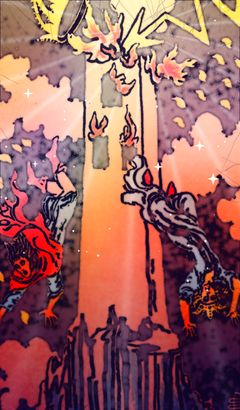
The Tower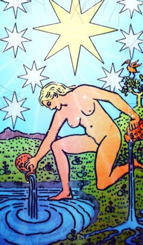
The Star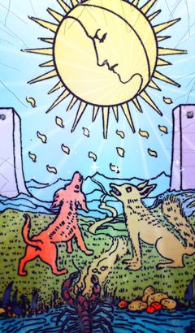
The Moon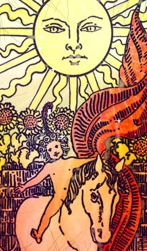
The Sun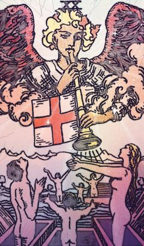
Judgement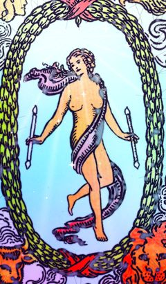
The WorldWands
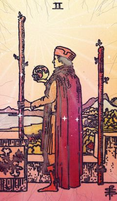
Two of Wands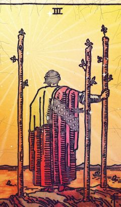
Three of Wands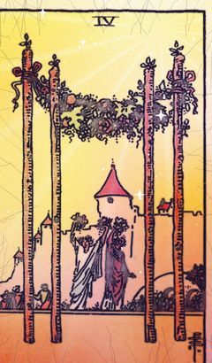
Four of Wands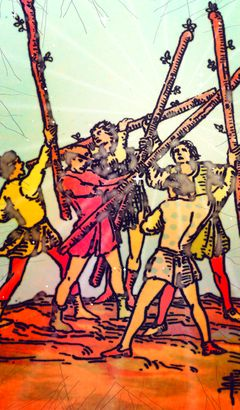
Five of Wands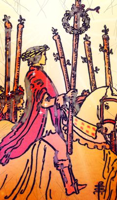
Six of Wands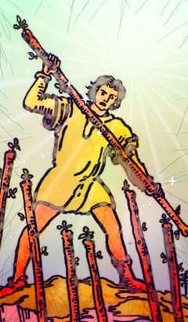
Seven of Wands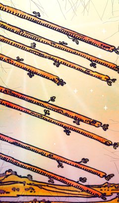
Eight of Wands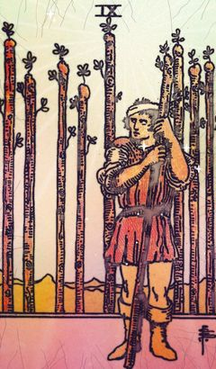
Nine of Wands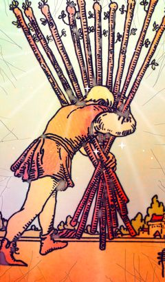
Ten of Wands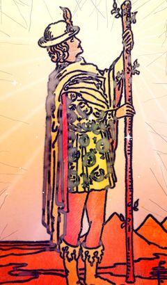
Page of Wands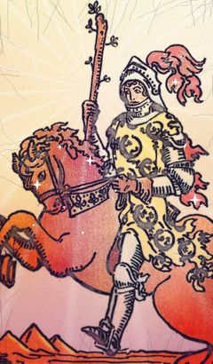
Knight of Wands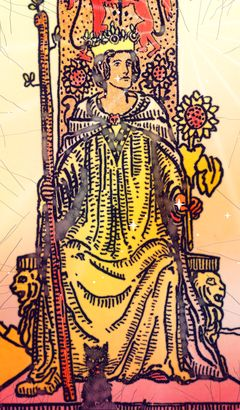
Queen of Wands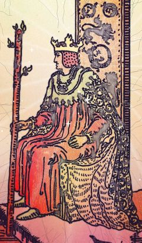
King of WandsCups
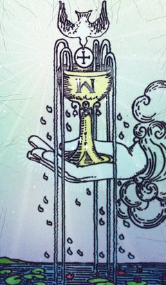
Ace of Cups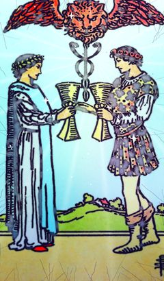
Two of Cups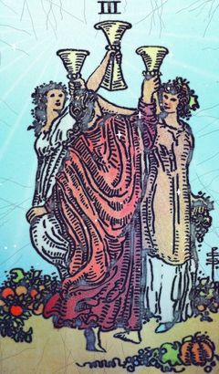
Three of Cups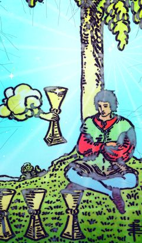
Four of Cups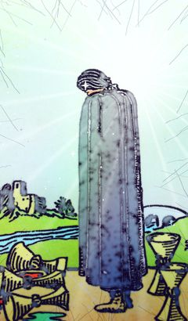
Five of Cups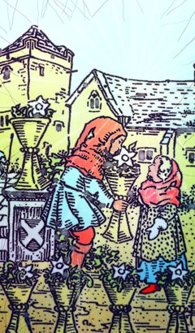
Six of Cups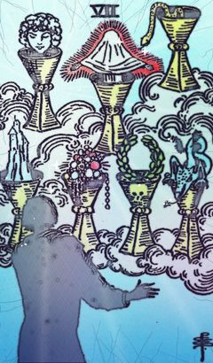
Seven of Cups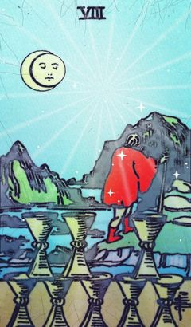
Eight of Cups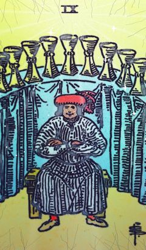
Nine of Cups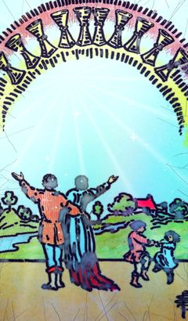
Ten of Cups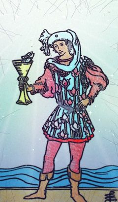
Page of Cups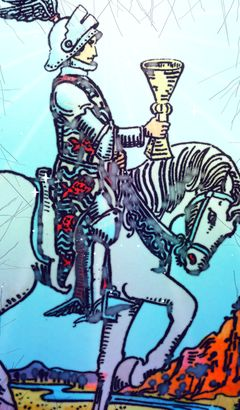
Knight of Cups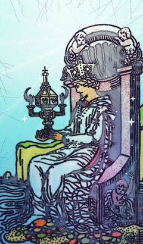
Queen of Cups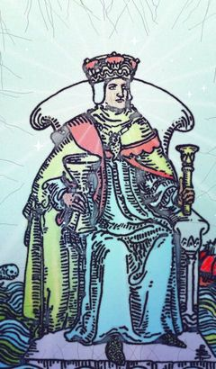
King of CupsSwords
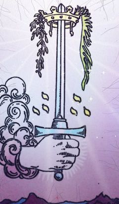
Ace of SwordsTwo of SwordsThree of SwordsFour of SwordsFive of SwordsSix of SwordsSeven of SwordsEight of SwordsNine of SwordsTen of SwordsPage of SwordsKnight of SwordsQueen of SwordsKing of Swords